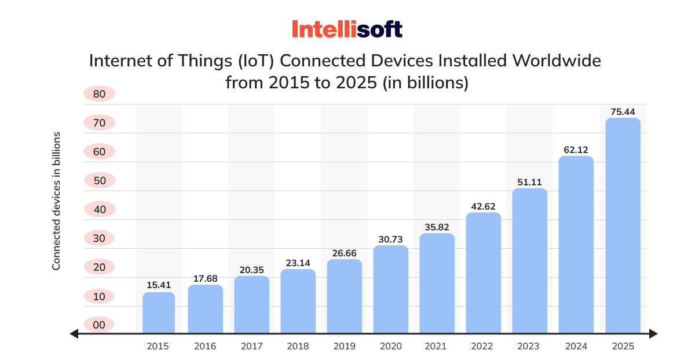

Key Milestones in Healthcare IoT
2008
First Medical IoT Devices
Early wearable sensors and remote monitoring systems
2010
Bluetooth Low Energy (BLE)
Introduction of low-power connectivity for medical devices
2014
Healthcare IoT Standards
Development of MQTT protocol for healthcare applications
2018
Smart Hospital Systems
Integration of RFID/NFC for patient and equipment tracking
2022
Advanced Biosensors
Miniaturized multi-parameter sensors for continuous monitoring
Hardware Technology Growth
trending_up
Medical IoT devices: 161M units (2023) → 646M units (2028)
memory
Sensor miniaturization: 70% size reduction in 5 years
